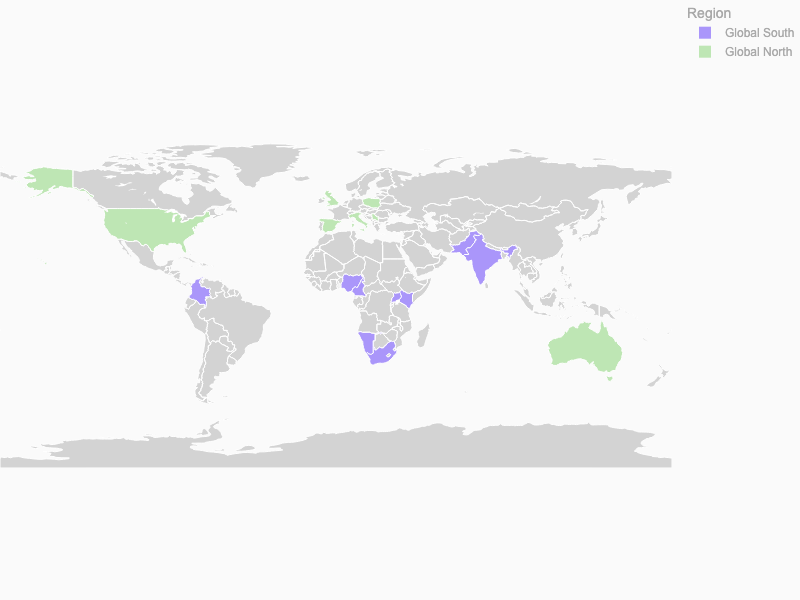
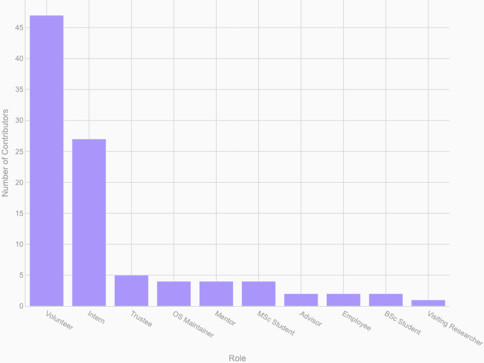
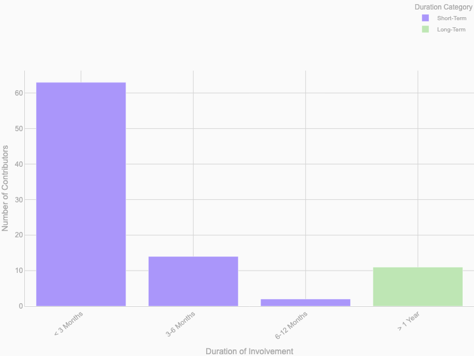
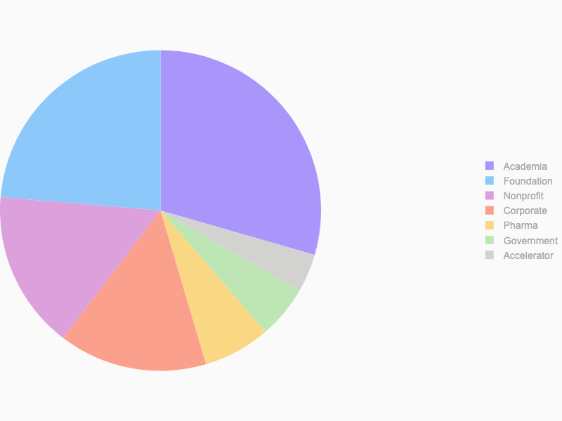
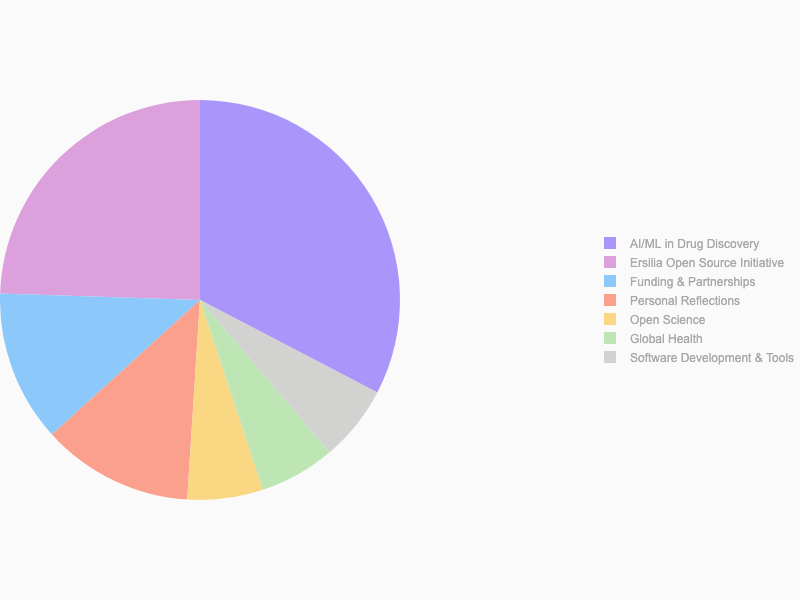
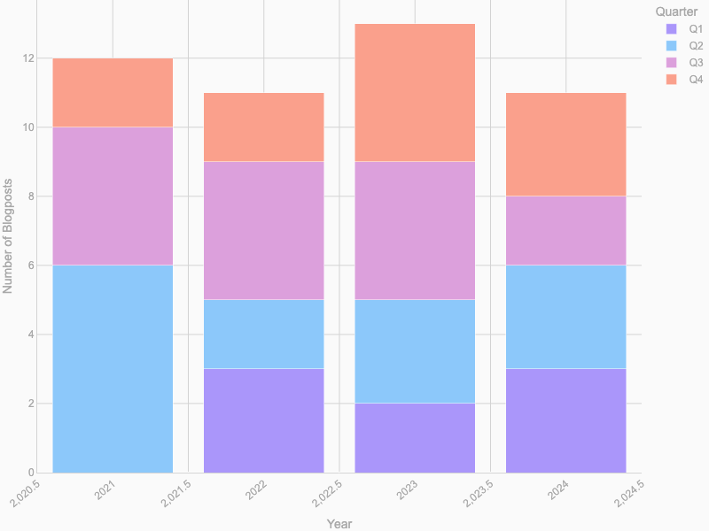

Community & Blog
Total To Date
Through committed support, collaboration, and communication, Ersilia nurtures a growing community across the world with high representation from the Global South.
Countries Represented
17
Unique Contributors
91
Organisations In Our Network
209
Blog Posts
50
Global Representation
Contributors By Country
Total of 17 unique countries
*Global South: Africa, Latin America and the Caribbean, Asia (excluding Israel, Japan, and South Korea), and Oceania (excluding Australia and New Zealand)
Range of Expertise and Involvement
Contributors' Events By Country
Total of 91 unique contributors.
Duration of Involvement
Short-term and long-term commitments welcome.
Volunteers by Organization
Total of 209 organisations.
Active Knowledge Sharing
Stay up to date with our newsletter and blogposts
Distribution Of Blog Post Topics
Topics align with health needs and research priorities in the Global South.
Blog Posts Over Time
Total of 50 blog posts.
